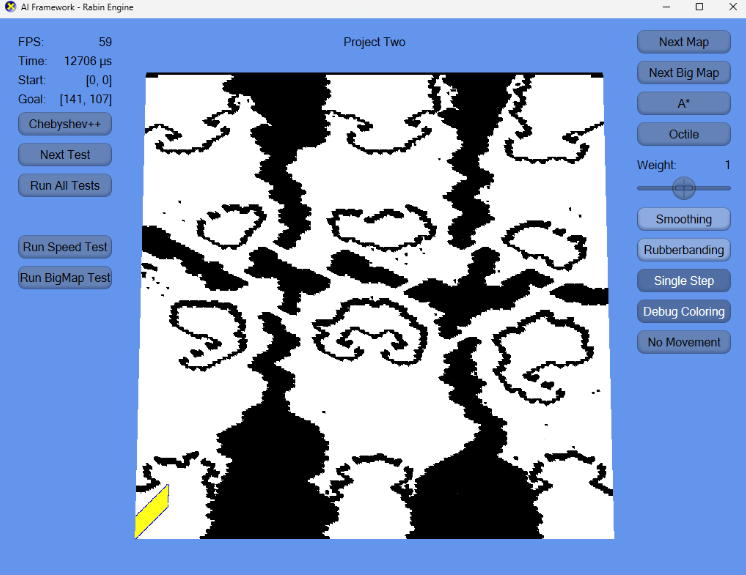

Large‑Scale A* Pathfinding Framework

Overview
A large‑scale A* pathfinding framework designed for complex, expansive maps. Built as both a high‑performance navigation system and an educational tool for students learning AI search algorithms. The system supports efficient open‑set/closed‑set management, heuristic tuning, and real‑time visualization of search behavior.
My Responsibilities
- Designed and implemented a scalable A* search framework for large maps
- Optimized node expansion, heuristics, and memory usage for real‑time performance
- Created visualization tools to show search paths, visited nodes, and frontier expansion
- Developed assignment materials to help students understand AI navigation
- Built demo scenarios showcasing performance across different map sizes
- Implemented modular heuristics (Manhattan, Euclidean, diagonal, weighted)
Technical Highlights
- Optimized A* Search: Efficient priority queue, reduced memory churn, fast neighbor evaluation
- Scalability: Handles very large grid maps with stable performance
- Heuristic System: Pluggable heuristics with tunable weights for different navigation styles
- Visualization: Real‑time rendering of open/closed sets and final path
- Teaching Tool: Designed as an assignment to help students explore AI navigation concepts
Tech Stack
Featured Components
Scalable A* Search Engine
Designed to handle large maps efficiently with optimized data structures and reduced overhead during node expansion.
Heuristic‑Driven Navigation
Supports multiple heuristics and weighting strategies, enabling different navigation behaviors and performance profiles.
Real‑Time Visualization Tools
Visual debugging tools show search progression, visited nodes, and final paths, making the algorithm intuitive for students.
Educational Framework
Developed as a teaching assignment to help students explore AI search algorithms and understand how heuristics influence performance.